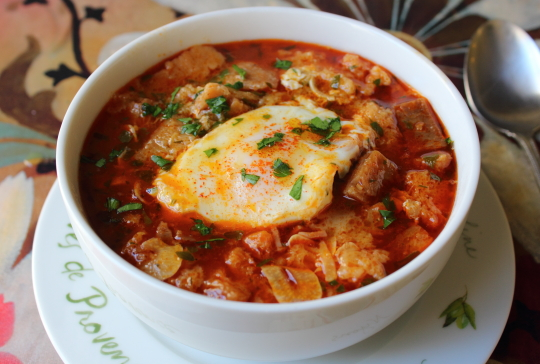

Spanish Garlic Soup (Sopa de Ajo) Recipe
Spanish Garlic Soup (Sopa de Ajo)

Sopa de Ajo with a poached egg.
Ingredients
- 6 cups cubed French Bread (day old preferred).
- 1/4 cup extra-virgin olive oil.
- 6 or more cloves garlic,very thinly sliced, add more to your liking.
- 2 ounces ham, diced.
- 1 1/2 teaspoons of smoked paprika, or to taste.
- 6 cups chicken broth, or more as needed.
- 1 pinch cayenne pepper, or to taste
- salt and ground black pepper to taste
- 1/4 cuo chopped fresh flat-leaf parsley
- 4 large eggs
Instructions
- Preheat oven to 350 degrees F (175 degrees C).Line a baking sheet with aluminum foil.
- Spread French bread onto the prepared baking sheet and drizzle 1 tablespoon olive oil over the top; gently stir to coat bread.
- Bake in the preheated oven until crispy and lightly browned, 15 to 20 minutes.
- Heat 1/4 cup olive oil in a heavy pot over medium heat. Cook and stir garlic in hot oil until just golden, 1 to 2 minutes. Add ham; cook and stir until heated through, about 1 minute. Add 1 to 2 teaspoons of paprika and cook for 1 minute more. Pour bread into pot and toss to coat with hot oil mixture.
- Pour chicken broth into bread mixture; add cayenne pepper, salt, and black pepper and stir. Bring to a boil, reduce heat to medium, and stir in parsley.
- Crack each egg into a small bowl or cup. Make 4 depressions in the bread on top of the soup with a spoon. Slowly pour an egg into each depression. Cover the pot with a lid and cook until egg whites are firm and yolks are thick but not hard, 2 to 3 minutes. Ladle soup into bowls and spoon an egg on top.